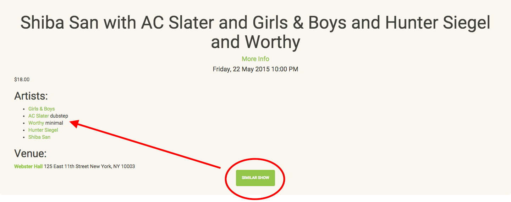

ConcertCurator
Seph Kramer and Tim Murray
Problem
When it comes to concerts/events in NYC
INFORMATION OVERLOAD
ConcertCurator
A fun and helpful app that serves-up the musical means to plan the perfect night
Demo
Let's try it out!
About the code

Technologies Used
- Rails
- Bootstrap
- Seatgeek API
- Google Maps API
- YouTube API
Challenge 1: Find Similar Genre
Take a genre (or several)
Select shows with any artists whose genres overlap
First pass:
# Inside the Event model
def self.find_similar_shows(genre_ids)
self.select do |event|
event.artists.any? do |artist|
genre_ids & artist.genres.pluck(:id) != []
end
end
end
Logically sound, but so slow
Refactor:
# Inside the Event model
def self.find_similar_shows(genre_id)
self.joins(:artists => :genres).where(genres: {id: genre_id})
end
Let SQL do the heavy lifting
Much faster!
Challenge 2: Loading a Map
First pass:
function initialize() {
var myLatlng = //grab lat-long of current venue
var my_venue = //grab the venue name
var mapOptions = {
//map options here
};
var map = new google.maps.Map(document.getElementById('map-canvas'),
mapOptions);
var marker = new google.maps.Marker({
position: myLatlng,
map: map,
title: my_venue
});
}
google.maps.event.addDomListener(window, 'load', initialize);
The bug
Only showed map after refresh
Why won't this run when the page loads!?
google.maps.event.addDomListener(window, 'load', initialize);
The hitch: Turbolinks
Turbolinks loads the page without really 'loading' the 'page'
Uses AJAX to swap in a new body
The fix:
google.maps.event.addDomListener(window, 'load', initialize);
google.maps.event.addDomListener(window, 'page:load', initialize);
Have to hook into 'page:load' event
Wishlist
Spruce up the data
- Fill in sparse categories like prices
- Add more categories like artist reviews and websites
Wishlist
Do more with APIs
- More map functionality
- Smarter youtube querying